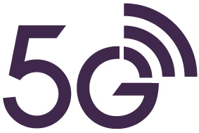

DESVENDANDO O 
Uma breve história das comunicações sem fio
A história das comunicações sem fio remonta ao fim do século 19, fruto dos trabalhos de diversos cientistas e pesquisadores famosos como James Clerk Maxwell, Heinrich Hertz, Alexander Stepanovich Popov, Nikola Tesla e Guglielmo Marconi.
Linha do tempo entre os anos 1895 e 1904:
1. Guglielmo Marconi apresentou ao mundo uma comunicação telegráfica sem fio em 1895, mas somente em 1897 isso foi adotado para uso experimental pelo Reino Unido.
2. Entre 1898 e 1900 Marconi teve sucesso comercial de sua criação vendendo-a para compradores militares, em 1901 ele então anunciou a primeira comunicação telegráfica enre dois continentes.
3. A patente da radiocomunicação foi disputada, em 1900 a patente pertencia a Nikola Tesla e o escritório americano havia desconsiderado um pedido de patente. somente em 1904 o pedido de Guglielmo Marconi foi reconsiderado e ele ficou com a patente.
Muitos anos se passaram entre o início das radiocomunicações e a introdução da telefonia móvel como a conhecemos hoje.
Principais marcos históricos após o ano de 1946:
1. Em 1946 foi inaugurado o primeiro serviço de telefonia móvel público nas 25 maiores cidades norte-americanas, em 1976 na Nova Iorque tinha uma enorme demanda e uma superlotação no serviço telefônico.
2. Pesquisas feitas entre 1950 e 1960 pelo Bell Labs estabeleceram o que hoje conhecemos como tecnologia celular.
3. Em 1983 foi iniciada a primeira operação comercial com o sistema AMPS (Advanced Mobile Phone System), que é a Primeira Geração (1G).
4. Em 1991 surge a Segunda Geração (2G)
5. Em 2001 surge a Terceira Geração (3G)
6. Em 2009 surge a Quarta Geração (4G)
Mas afinal, o que realmente é o 5G?
Para entender isso melhor, primeiro é importante explicar os requisitos estabelecidos pelos órgãos de padronização para que uma nova tecnologia de comunicações móveis celulares fosse considerada de quinta geração.
Sobre a União Internacional de Telecomunicações (UIT)
A União Internacional de Telecomunicações (UIT) é uma agência especializada, associada à Organização das Nações Unidas (ONU), responsável pela governança de processos e mecanismos de coordenação para o desenvolvimento das tecnologias de informação e comunicação (TICs).
Em 2012, a UIT iniciava um programa para o desenvolvimento da tecnologia 5G e, em 2015, concluiu um documento que definia a visão do que seria considerado como a 5ª geração de comunicações móveis celulares.
O documento apresentava grandes expectativas para o 5G, essas, eram:
• Ser uma infraestrutura sem fio para conectar o mundo;
• Ser um acelerador de um novo mercado baseado em TICs;
• Reduzir a desigualdade digital;
• Criar novas formas de comunicação;
• Criar novas formas de educação;
• Promover a eficiência energética através de processos digitalizados e otimizados;
• Possibilitar mudanças sociais;
• Facilitar novas formas de arte e cultura.
Para alcançar todas essas expectativas, três principais cenários de uso foram definidos, esses cenários são:
Banda larga móvel aprimorada ou enhanced Mobile Broadband (eMBB)
O 5G vem com um ganho na capacidade de transmissão de dados (velocidade)Comunicações massivas do tipo máquina ou massive Machine Type Communication (mMTC)
O 5G é a primeira geração de comunicações móveis que já nasce com a disseminação massiva de Internet das Coisas, ou IoT. Mais do que isso, o 5G é considerado um grande catalisador na disseminação do IoTComunicação de ultra confiabilidade e baixa latência ou Ultra-Reliable and Low Latency Communications (URLLC)
Latência é o nome do atraso na resposta da rede a uma transmissão de dados. Se o eMBB é visto como a velocidade da rede, podemos dizer que o URLLC é o equivalente à agilidade da rede.O mundo com o 5G
No Brasil nós temos a tecnologia 5G, ela era utilizada com base na tecniologia Dynamic Spectrum Sharing (DSS) até 2022, quando novas faixas de frequência fora liberadas com o leilão 5G. O DSS compartilha o mesmo canal de frequência dos 5G com os 4G, assim a capacidade do 5G era penalizada. A Coréia do Sul foi a primeira a ter a rede 5G, suas redes estão disponíveis no mercado desde 1 de dezembro de 2018, já os Estados Unidos foram o segundo país a iniciar suas operações comerciais com suas redes 5G ainda em 2019, entretanto a China é responsável pelo maior número de rádio bases instalado e de terminais conectados às redes 5G no mundo, tendo iniciado as operações comerciais no fim de outubro de 2019.
Redes standalone e non-standalone
Standalone
As redes standalone É uma rede somente de 5G e por isso também é chamada de rede 5G puro, funciona indepentemente das redes 4G de forma autônoma, logo é o tipo de rede mais usada em indústrias que necessitam de autonomia
Non-standalone
As redes non-standalone são redes que necessitam de implementações 4G dá existentes para emitir o 5G
Componentes básicos da rede 5G
A composição pode ser bem complexa, chegando a conter: Sistemas de Suporte à Operação (OSS), Sistemas de Suporte ao Negócio (BSS), Subsistemas Multimídia (IMS), controladores, orquestradores, firewalls e muitos outros. Entretanto os componentes mínimos que são necessários para funcionamento são: Rede de Acesso Rádio (RAN), a Rede de Transporte e o Núcleo de Rede.
Rede de Acesso Rádio (RAN)
A Rede de Acesso Rádio (Radio Access Network ou RAN) é o segmento da rede cuja principal função é a transmissão e a recepção de dados por meio da interface aérea, ou seja, a comunicação sem fio.
Rede de Transporte
Interliga o núcleo com a rede de acesso. No 5G, a Rede de Transporte precisa conectar os elementos que compõem a RAN, que podem estar distribuídos em localizações a centenas de quilômetros de distância entre si ou, ainda, nas aplicações de baixíssima latência. Isso pode demandar que funções do núcleo de rede estejam bem mais próximas fisicamente das antenas.
Núcleo de Rede
O Núcleo de Rede, em uma grande operadora de telecomunicações, é um sistema complexo que agrega vários
subsistemas que atuam tanto nas operações das redes fixas como das redes móveis. O que iremos explorar
adiante se resume ao Núcleo de Rede Móvel 5G, conhecido pelas siglas NGC ou ainda, 5GC.
O 5GC é o grande responsável pelo controle de todo o funcionamento da rede 5G. Desde a autenticação,
autorização e auditoria de acesso de um terminal à rede, até o controle da rota de conexão de dados
do terminal usuário com a internet.